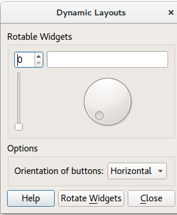

Dynamic Layouts Example
Shows how to re-orient widgets in running applications.
Dynamic Layouts implements dynamically placed widgets within running applications. The widget placement depends on whether Horizontal or Vertical is chosen.

For more information, visit the Layout Management page.
Dialog Constructor
To begin with, the application creates the UI components by calling the following methods:
- createRotatableGroupBox()
- createOptionsGroupBox()
- createButtonBox()
It then adds the UI components to a GridLayout (mainLayout).
Finally, Dialog::rotateWidgets() is called.
createOptionsGroupBox();
createButtonBox();
mainLayout = new QGridLayout;
mainLayout->addWidget(rotatableGroupBox, 0, 0);
mainLayout->addWidget(optionsGroupBox, 1, 0);
mainLayout->addWidget(buttonBox, 2, 0);
setLayout(mainLayout);
mainLayout->setSizeConstraint(QLayout::SetMinimumSize);
setWindowTitle(tr("Dynamic Layouts"));
Creating the Main Widgets
The createRotatableGroupBox() method creates a rotatable group box, then adds a series of widgets:
It goes on to add signals and slots to each widget, and assigns a QGridLayout called rotatableLayout.
void Dialog::createRotatableGroupBox() { rotatableGroupBox = new QGroupBox(tr("Rotatable Widgets")); rotatableWidgets.enqueue(new QSpinBox); rotatableWidgets.enqueue(new QSlider); rotatableWidgets.enqueue(new QDial); rotatableWidgets.enqueue(new QProgressBar); int n = rotatableWidgets.count(); for (int i = 0; i < n; ++i) { connect(rotatableWidgets[i], SIGNAL(valueChanged(int)), rotatableWidgets[(i + 1) % n], SLOT(setValue(int))); } rotatableLayout = new QGridLayout; rotatableGroupBox->setLayout(rotatableLayout); rotateWidgets(); }
Adding Options
createOptionsGroupBox() creates the following widgets:
optionsGroupBoxbuttonsOrientationLabelbuttonsOrientationComboBox. The orientation of the ComboBox is eitherhorizontal(default value) orvertical. These two values are added during the startup of the application. It is not possible to leave the option empty.
void Dialog::createOptionsGroupBox() { optionsGroupBox = new QGroupBox(tr("Options")); buttonsOrientationLabel = new QLabel(tr("Orientation of buttons:")); buttonsOrientationComboBox = new QComboBox; buttonsOrientationComboBox->addItem(tr("Horizontal"), Qt::Horizontal); buttonsOrientationComboBox->addItem(tr("Vertical"), Qt::Vertical); connect(buttonsOrientationComboBox, QOverload<int>::of(&QComboBox::currentIndexChanged), this, &Dialog::buttonsOrientationChanged); optionsLayout = new QGridLayout; optionsLayout->addWidget(buttonsOrientationLabel, 0, 0); optionsLayout->addWidget(buttonsOrientationComboBox, 0, 1); optionsLayout->setColumnStretch(2, 1); optionsGroupBox->setLayout(optionsLayout); }
Adding Buttons
createButtonBox() constructs a QDialogButtonBox called buttonBox to which are added a closeButton, a helpButton and a rotateWidgetsButton. It then assigns a signal and a slot to each button in buttonBox.
void Dialog::createButtonBox() { buttonBox = new QDialogButtonBox; closeButton = buttonBox->addButton(QDialogButtonBox::Close); helpButton = buttonBox->addButton(QDialogButtonBox::Help); rotateWidgetsButton = buttonBox->addButton(tr("Rotate &Widgets"), QDialogButtonBox::ActionRole); connect(rotateWidgetsButton, &QPushButton::clicked, this, &Dialog::rotateWidgets); connect(closeButton, &QPushButton::clicked, this, &Dialog::close); connect(helpButton, &QPushButton::clicked, this, &Dialog::help); }
Rotating the Widgets
Removes the current widgets and activates the next widget.
void Dialog::rotateWidgets() { Q_ASSERT(rotatableWidgets.count() % 2 == 0); for (QWidget *widget : qAsConst(rotatableWidgets)) rotatableLayout->removeWidget(widget); rotatableWidgets.enqueue(rotatableWidgets.dequeue()); const int n = rotatableWidgets.count(); for (int i = 0; i < n / 2; ++i) { rotatableLayout->addWidget(rotatableWidgets[n - i - 1], 0, i); rotatableLayout->addWidget(rotatableWidgets[i], 1, i); } }
Running the Example
To run the example from Qt Creator, open the Welcome mode and select the example from Examples. For more information, visit Building and Running an Example.